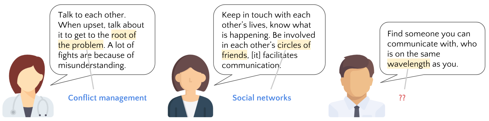
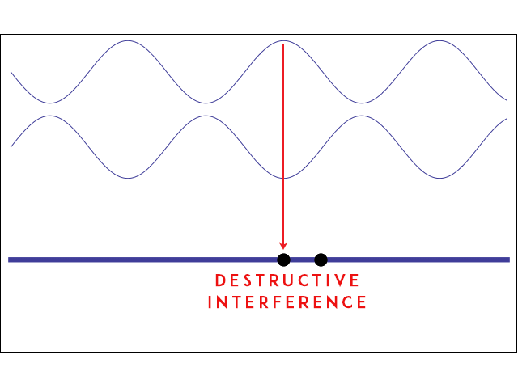
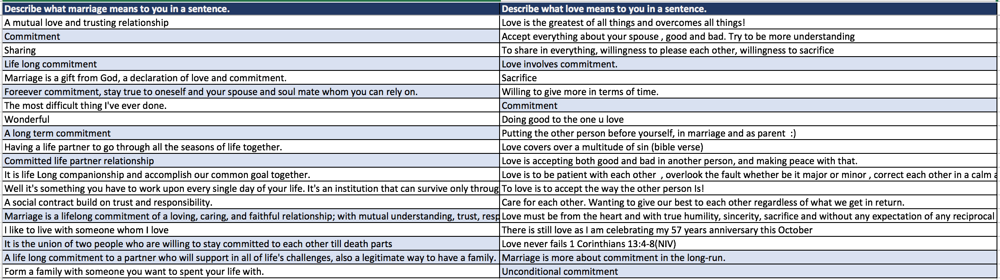

Making it Last
Tip 7: Communication is important. Why?
We asked our knowledgeable survey respondents to give advice to young couples wanting to get married. Take a look at some of our reponses:
Notice how respondents identify success factors such as conflict management, and (common) social networks, factors proposed by Stafford et al.
See a common theme? Akin to what was raised in Stafford et al.’s paper on relationship maintenance (2000), respondents emphasised the need to communicate with one’s spouse and understand him/her.
How difficult can communication be?
You would have probably learnt in school that two waves with the same amplitude, frequency, and wavelength can superimpose, resulting in constructive or destructive interference.
If we take communication to be an analogy for superimposition, communication can be constructive or destructive. Communication is tough, but communication of the same wavelength begets connection. Focus on making communication constructive.
We recommend that you memorise this useful ATLAS:
- Ask questions. Not because you are bored, but because you care.
- Talk about your day. Not to hear your own voice but to share.
- Listen. Not to respond but to understand.
- Argue. Not to criticise but to clarify.
- Speak. Not before you think.
Tip 8: Know the difference between acceptance and tolerance
Tolerance involves putting up with your partner, while acceptance involves a greater sense of “my partner’s thoughts are mine too”.
Although many of our survey respondents used the two terms interchangeably, we feel that there is a subtle difference between the two terms. For instance, picture a scenario where you have tolerated something without fully accepting it (like reading our tips)... There we go.
When handling important life decisions as a couple, it is highly probable that you would much rather want your partner to, for instance, accept your career choices on a deeper level, rather than simply put up with them with a certain forbearance. Both parties have to consciously move past tolerance and towards acceptance.
Take a tip or two from Mr Daniel Lai:
Instead of putting up with the shortcomings of his partner because his was unable to change them, Daniel was able to consciously accept his partner’s ideals as his own. This was driven by the trust that he places in having made the right choice when he “opened both eyes”.
Be like Daniel.
Tip 9: Love takes on different forms.
Where does love exist in the grand scheme of things?
When our survey respondents were asked to talk about marriage, they did not mention much about love.
However, when we asked them to talk specifically about love, we found similarities with how they spoke about marriage.
The blue rows are our survey answers discussing “commitment”. Even with small samples, people think of similar things when discussing marriage and love.
Respondents referred to love in the same language that was used to talk about successful marriages, and the topics revolved around commitment, mutual understanding and sacrifice.
Hence the question is less about whether love exists, but what forms love takes.
For all you hopeful singles and couples, and those out there feeling dejected and jaded, we want to remind you that love exists in many forms. It exists in many shapes and sizes, both conventional and unconventional, and perceptible and imperceptible.
References
Stafford, L., Dainton, M., & Haas, S. (2000). Measuring routine and strategic relational maintenance: Scale revision, sex versus gender roles, and the prediction of relational characteristics. Communication Monographs, 67(3), 306-323. http://dx.doi.org/10.1080/03637750009376512
Weishaus, S., & Field, D. (1988). A Half Century of Marriage: Continuity or Change?. Journal Of Marriage And The Family, 50(3), 763. http://dx.doi.org/10.2307/352645